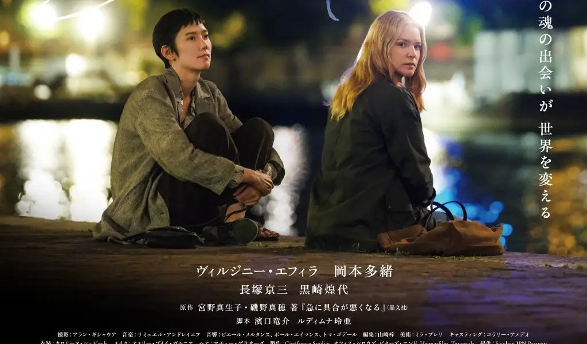

| 导演 | 滨口龙介（Ryusuke Hamaguchi） |
| 编剧 | 滨口龙介、蕾雅·勒·迪姆纳（Léa Le Dimna，法日双语编剧兼翻译） |
| 原著 | 宫野真生子（哲学家）、矶野真穗（医学人类学家）往复书简集《急に具合が悪くなる》（晶文社，2019.09）——二十封书简，2019 年 4 至 7 月间往复三月；宫野于 2019.07.22 病逝，年四十二。书简以九鬼周造《偶然性的问题》为哲学参照；片名取自书中转述的主治医嘱「病情可能会突然恶化」 |
| 摄影指导 | 阿兰·吉绍阿（Alan Guichaoua） |
| 剪辑 | 山崎梓 秋本みのり（Akimoto Minori） |
| 配乐 | 萨缪尔·安德烈耶夫（Samuel Andreyev，加拿大裔法国作曲家，经石桥英子推荐） |
| 制片 | Cinefrance Studios（法，含 Arte France Cinéma）· Office Shirous（日）· Bitters End（日）· Heimatfilm（德）· Tarantula（比利时） |
| 发行 | Diaphana（法国）／Bitters End（日本）／NEON（北美） |
| 片长 | 196 分钟 |
| 语言 | 法语 · 日语（少量英语） |
| 摄影机 | RED V-RAPTOR（数字拍摄） |
| 画幅 | 未见官方公开数据（截至 2026.08.26） |
| 首映 | 2026.05.15 第 79 届戛纳电影节主竞赛（映后 7 分钟起立鼓掌） |
| 公映 | 2026.06.19（日本）／2026.08.12（法国）／2026.11.25（北美，限定院线）／中国大陆标注 2026，档期待确认 |
| 票房 | 法日艺术院线发行，未见权威票房统计发布（截至 2026.08.26） |
| 戛纳获奖 | 最佳女演员：维尔日妮·埃菲拉＋冈本多绪（并列）；金棕榈提名（当届金棕榈为蒙吉《峡湾》） |
| 维尔日妮·埃菲拉 | Marie-Lou 玛丽-露 巴黎郊区失智照护机构「自由花园」院长，推行人性照护法（为出演学日语） |
| 冈本多绪 | Mari 真理 旅法日本实验戏剧导演，IV 期癌症患者；与玛丽-露同名互为镜像 |
| 长塚京三 | 吾朗 资深演员，戏中戏饰意大利精神科医生巴扎利亚 |
| 黑崎煌代 | 智树 心智障碍少年，吾朗之孙，亦参演戏中戏 |
| 让-夏尔·克里切特 | 奥利维耶 玛丽-露的行政搭档 |
| 玛丽·布奈尔 | 苏菲 资深护士，因照护过劳抵制培训 |
2026 年 5 月 15 日晚，戛纳卢米埃尔大厅，滨口龙介的《突如其来》结束放映，观众起立鼓掌七分钟。八天后颁奖，最佳女演员由两位主演并列获得：维尔日妮·埃菲拉与冈本多绪——后者是戛纳史上第一位获此奖的日本演员。烂番茄 97%、Metacritic 87，在多家影评人的戛纳最佳片单位列前茅；与此同时，《卫报》的彼得·布拉德肖给了三颗星，嫌它「说教」。
这是一部什么样的电影？巴黎郊区，一家收治失智老人的营利性照护机构「自由花园」。院长玛丽-露在推行法日两国照护界真实使用的「人性照护法」（Humanitude）——让患者意识到照护者的在场、鼓励他们站立行走——却遭遇护士团队因过劳而起的抵制。一场偶遇把她带到日本戏剧导演真理面前：一位旅居法国、癌症末期的剧作家。两个名字几乎相同的女人（Mari 与 Marie-Lou）开始交谈，从塞纳河畔谈到养老院的深夜，再谈到京都山村的破晓，谈了将近三个小时。
影片的底本是真实书信：日本哲学家宫野真生子与医学人类学家矶野真穗的往复书简，写于宫野乳腺癌转移治疗期间。她在写完序言后陷入昏迷，十五天后离世。滨口把这段日本的对谈搬到法国，换上法国的照护现场、法国的演员、法语的对白——这是他第一次离开日本拍片。
本刊的判断是：《突如其来》不是一部温情电影，而是一部政论电影——它把「照护劳动能否在晚期资本主义中幸存」这个问题，放进了戏剧冲突的正中央；温情只是它的论据，不是它的底色。它当然延续了《驾驶我的车》的一切：时长、对白密度、剧场元素、语言政治。但战场换了。也因此，它同时收获了两极的评价：赞它的人看见的是那套被磨得更纯的滨口语法，疑它的人看见的是语法过载后的说教倾向。这场分歧本身，就是本期场刊想要摊开来讨论的东西。
值不值得看？如果你是《驾驶我的车》的观众——不必犹豫，这是滨口方法的全面进化，双影后的表演是那种会留在影史里的表演。如果你是普通观众——门槛在片长与节奏，回报在结尾的克制：一部谈了三小时死亡的电影，最后只给你一阵风。本期号外《二十年导演功课》梳理了滨口龙介的创作方法，可作观前导读。
影片里有一场戏，微妙到容易被忽略。话剧演后谈，观众席里的玛丽-露举起了手。她用日语向导演真理提问——在一个法语场合里。镜头扫过身边的法国观众，有人皱眉，有人低声抱怨。这是一次失礼吗？滨口把它拍成了一次越境：一个人决定用对方的语言说话，哪怕代价是冒犯在场的所有人。整部《突如其来》，就是这一次越境的延长。
从这里进入这部电影，比从剧情进入更准确。因为滨口龙介电影的核心装置，从来不是「对话」，而是翻译——在语言不通的地方，制造更深的理解。《驾驶我的车》早已把这套语法摆上台面：多语言版《凡尼亚舅舅》里，手语、日语、韩语、英语同台，谁也听不懂谁，戏却成立。滨口自己解释过原因：
《突如其来》把这条原理推向了作者生涯的极致：一位日语导演，拍了一部以法语为主体的电影。银幕之内，玛丽-露与真理一个说法语、一个说日语，靠着「对彼此语言的深切眷恋」（豆瓣剧情简介语）靠近对方；银幕之外，埃菲拉为角色学日语，冈本多绪与长塚京三用法语演戏——翻译不发生在字幕里，发生在演员的身体上。
注意到一个细节的人会获得额外的钥匙：两个女主角是同名的。Mari 与 Marie-Lou，真理与玛丽-露。日本官网的宣传语是「这场灵魂的相遇将改变世界」（この魂の出会いが世界を変える）——同名的两个人隔着语言相认，像一枚硬币的两面隔着金属听彼此的回声。当玛丽-露在河畔对真理说起自己与日本的渊源、真理说起自己与法国的渊源时，她们交换的其实是同一个故事的两个版本。
于是影片的情感最高点，落在了语言崩塌的一刻。养老院上演真理的话剧，为法语观众架起的日语字幕屏被智树碰倒——翻译的中断本应是灾难，老演员吾朗却当即改用法语继续演出。那一晚，真理在两种语言的废墟上情绪决堤，玛丽-露抱住她。语言的两岸在这一刻没有了河。
杰西卡·江在《综艺》的影评里写道，影片「有时悬浮在长而银亮的对话串中，达到一种失重般的优雅」（a kind of levitating grace）——这句话写于她给出「年度最稀有电影」判断的同一段。她描述的失重感，恰恰来自语言的错位：观众和角色一样，一半听得懂、一半听不懂，于是被迫像滨口说的那样，去听声调、看身体。这不是观影的障碍，是观影的入口。
2022 年，滨口在接受釀電影专访时说过：「语言就是我为了达成目的的一种道具和手段。」这句话常被引用，但《突如其来》给它补上了后半句——当道具不称手的时候，当翻译失败的时候，人真正开始倾听。影片最后，真理的日语话剧以法语收场，骨灰撒进不讲任何语言的风里。翻译的尽头不是听懂，是愿意继续听。
先说清楚一件事：影片里的「人性照护法」（Humanitude）不是剧作家的发明，而是真实存在的照护技术——由法国照护教育者创立，后引入日本，在众多照护机构实践。滨口选择它，有精确的理由。他在受访时说，把故事搬到法国后，他需要一座法日之间的桥，而「那是一种诞生于法国、被引入日本并在多处实践的方法，把人的维度置于照护的核心，为了每个人之为人的完整」。
这也决定了《突如其来》的真正题材：不是友谊，不是绝症，而是照护劳动的政治经济学。玛丽-露要在机构里推行「患者优先」，每一件小事都要多花时间——而时间就是人力，人力就是钱。影片没有把这个矛盾拍成善恶对决。抵制培训的资深护士苏菲不是反派：她在机构还是精神病院的年代就在这里工作，她抵制不是因为冷血，而是因为她算得清一笔账——按人性照护法的标准做完每位患者的晨间护理，早班必然把做不完的工作转嫁给本已超载的午班；一年数次的强制培训，抽走的恰恰是当班的人手。大卫·鲁尼在《好莱坞报道者》的影评里，把影片的议题概括为一句：
顺着这条线看，影片的每一个「闲笔」都有出处。戏中戏排的是意大利精神科医生佛朗哥·巴扎利亚的生平——历史上推动意大利废除精神病院的人：照护议题的历史纵深，被直接排进了戏中戏。真理以哲学家的身份谈起，资本主义制造着「内」与「外」，且「外部」在不断扩大——被排出「正常」的人越来越多。而大卫·埃尔利希在 IndieWire 那句半开玩笑的开场白，点的是同一个结构性观察：影片充满「怀斯曼式的会议场面」——像纪录片导演弗雷德里克·怀斯曼那样，把机构的会议、培训、视察拍成社会解剖刀。股东来访那场戏是全片最冷的一段：老人们被扶着行走、家属与护理者互动，这一切被呈现给资本的眼睛，作为「投资有回报」的证据。
明确了这个题材，影片的「说教」争议才可以被准确地讨论。布拉德肖在《卫报》的三星影评里说它「大胆而高蹈、却也相当说教」「相当考究（precious）」，怀疑一个常年在国际影展间往返的导演，做出了「某种不安的国际混合物」。扎卡瑞克在 Time 一边赞美打光，一边指出「某些想法与主题的重复，或许不必要」。这些批评指向同一个事实：影片把大量论证直接放进了人物的对白——关于照护、关于资本、关于生死。烂番茄的编辑共识倒是把这个「缺点」反着说了一遍：它「既是一场苏格拉底式的对话，也是一部电影」。
本刊的判断是：说教性是这部影片自觉的形式选择，不是失控——但它确实是有代价的选择。代价在节奏：三个多小时里，论证性的对话占了太满的份额，观众需要自己消化「被上课」的不适。回报在深度：因为影片不肯把矛盾简化为好人坏人，它笔下的照护现场才有了纪录片式的可信度——苏菲的抵制有道理，玛丽-露的理想也有道理，错的是让两者相撞的预算表。当真理把足部按摩教给护理者与患者，当苏菲最终在培训现场坐下，这些微小的和解之所以动人，正因为影片先让你看见了账本上的赤字。
影片没有把这笔账算平——它做不到，现实也做不到。人手短缺、低薪、护理者的过劳，这些结构性约束在片尾一个都没有解决，两位女主角只是在自己的半径内，把「不可能」往前推了一小步。埃尔利希的结语因此显得准确而不夸张：「它让不可能显得可能。」（It makes the impossible seem possible.）这不是鸡汤，是对一笔算不平的账最诚实的记账方式。
影片的最后一个镜头值得先说：京都，俯瞰真理老宅的山上——玛丽-露与真理曾经长谈的地方。吾朗与智树把真理的骨灰撒进风里。没有闪回，没有音乐放大，没有墓碑上的名字。一部 196 分钟、谈了无数次死亡的电影，最后只给了死亡一阵风。
这个结尾不是「克制」两个字能解释的。它来自滨口龙介一以贯之的方法论——一种他自己命名过的「被动」。2022 年接受釀電影专访时，他谈到现场收音总混进计划外的噪音，《偶然与想象》里芽衣子质问前男友那场戏的工地噪声就是现场偶然发生的，他完整保留了它，然后说了下面这段话：
用这个视角回看《突如其来》，会发现它的剧作结构本身就是「接受型」的。影片的每一次推进，都由偶发事件触发，而非主人公的意志。玛丽-露的事业困局，被一次电车边的偶遇解开——她跟着一个奔跑的心智障碍少年走进公园，人生从此拐弯。真理的病情转折是「突然」——这正是片名的含义：急に具合が悪くなる，突然感到不舒服，原著书简的题目，也是宫野真生子写下序言后那十五天的题目。连全片的情感顶点也是一次事故：智树碰倒字幕屏，吾朗临场改说法语。滨口把「接受偶然」写进了情节的骨头里。
再往深一层：这部影片把滨口的被动性第一次主题化了。玛丽-露要学会接受苏菲的抵制——道歉，放缓培训；真理要学会接受自己的死亡——放弃临终关怀病房，回到巴黎，以驻院艺术家的身份住在朋友身边；最后所有人一起接受风。杰西卡·江那句「不动声色的重大奇迹」（unassumingly momentous miracle）之所以精准，是因为它同时描述了影片的形态与内容：被动地接受，然后从接受里长出力量。
这种被动也统治着表演。滨口在采访里给演员的指令从来不是「这句台词要演出什么」，而是：「去思考讲这句台词之后，可以期待对方丢回来什么样的反应——你的预期，跟你去『接招』的能力，才会成为我们实际上看到的表演。」《突如其来》的两位女主角把「接招」演成了双影后级别的互文：埃菲拉的玛丽-露是一个专业听众——导演三宅唱在官方评论里说，「听对方说话的维尔日妮·埃菲拉的那张脸」，让他强烈着迷；冈本多绪的真理则是一个把每一次病情突变都「接」进表演里的人。戛纳把最佳女演员颁给了两个人而不是一个人——评奖式的判断，罕见地说出了结构性的真话：这部影片的表演不可拆分，因为它本来就关于互为照护的两个人。
还有身体。滨口在采访里有个著名的观察：日语「比较接近自官僚体系内衍生出来的语言」，会压抑肢体；他敬仰的卡萨维蒂笔下那种自由的肢体，是日本演员难以企及的参照。而这一次，他给了自己一个法语片场。法语的声调与节奏推着身体走，于是我们看到了滨口电影里前所未见的身体场面：互相推着轮椅的夜路散步、塞纳河畔的并坐、足部按摩时手与脚的对话。哲学家国分功一郎在官方评论页写道：「这部电影中相遇的众多身体……把温柔与这个世界的严苛都教给了我们。」
被动不是消极。它是一种对电影的信任——相信现场会发生比剧本更好的事，相信演员会比导演更懂角色，相信观众会补完留白。滨口在采访的最后说：「因为我相信电影，我相信电影里出现的东西，会建立起它跟观众之间的关系，所以我让它存在于那里。」骨灰入风的那最后一个镜头，就是这句话的电影形态：不解释，不放大，让它存在在那里，然后等风来。
摄影：昼与夜的交界
滨口《驾驶我的车》的摄影指导四宫秀俊这一次没有随行——法国部分几乎全部部门换成了法国班底。接棒的阿兰·吉绍阿（Alan Guichaoua）是纪尧姆·布拉克（Guillaume Brac）多部作品的摄影，出身法国当代日常派：自然光、实景、不摆姿态的巴黎。日本官网形容他把「巴黎的街景、昼与夜的交界」收进了银幕。这恰好对上影片的气质——它需要的不是明信片巴黎（滨口明确说过要拍「与刻板印象略有不同的巴黎」，取景避开游客区），而是机构走廊、电车沿线、河畔路灯这种「在巴黎生活」的巴黎。扎卡瑞克在 Time 的那句话是佐证：「影片的打光美得几乎是一种奇迹」——那种美不属于布光车，属于对真实光线的等待。拍摄使用 RED V-RAPTOR 数字摄影机（RED 官方发布的摄影指导访谈确认）。
制式与画幅
数字拍摄，无胶片版本与特别画幅格式公布；截至本刊发稿，官方未公开放映画幅数据（Unifrance 技术页未能访问，此项标注为「未确认」）。影片是标准的艺术院线发行规格，日本 6 月 19 日公映、法国 8 月 12 日公映，无中场休息。196 分钟的时长决策本身可以视为一次「制式」选择——它强制观众进入影片的时间尺度，代价与收益见影评之二。
剪辑：切换点在人物回头时
剪辑由山崎梓与秋本みのり担任——山崎梓曾操刀《驾驶我的车》的剪辑，长镜头与对话段的节奏感一脉相承。滨口在釀電影专访里详述过自己的空间剪辑观：古典好莱坞是「三面布景」，第四面留给摄影机；而古典日本电影存在 360 度的「四面布景」，切换点「时常做在人物回头的时候」。《突如其来》的室内对话戏延续这套语法——摄影机与人物保持距离，空间在回头的一瞬重新洗牌。争议也存在：影评博客 World of Reel 提到后半段有「感觉不必要的假结尾」，Time 影评也指出主题复述偏多。三小时十六分里节奏的松紧，是本片技术层面最值得观众自行检验的一项。
配乐：石桥英子推荐的人
配乐萨缪尔·安德烈耶夫（Samuel Andreyev）是加拿大裔法国作曲家，以器乐与电子作品闻名。他的入选路径本身就是滨口方法论的一则注脚——由《邪恶不存在》的配乐者石桥英子推荐。日本官网说他的音乐「为细腻的电影世界加厚」。实际听感确实稀薄而精确：配乐几乎不参与叙事推进，只在河畔、京都、结尾等少数节点出现，像给对话留出的呼吸记号。这与《邪恶不存在》里石桥英子那种参与叙事的声音角色形成对照——滨口换了一部片，就换了一种音乐的功能。
声音：偶然的哲学
声音设计由法国团队担任。对滨口而言，环境声从来不是需要清除的噪声，而是可以入戏的现实材料——《偶然与想象》里的工地噪声与卡车声都是现场偶然收得并保留的（他在釀電影专访中详述过，见影评之三）。这部影片把同一哲学带到了巴黎：电车声、机构里的呼叫铃、河畔的步履与风声，构成对白之外的第二个声部。多语言对白则是另一重声音设计：滨口说过，在多语言环境里「肢体语言与声调反而变得更重要」——法语的连音与日语的音拍在同一空间里交错，观众即使两门语言都听不懂，也能从声音的质地分辨出谁在提问、谁在安慰。
| 戛纳首映 | 2026.05.15（第 79 届主竞赛） |
| 日本 | 2026.06.19（Bitters End）；院线公映后已可见于 U-NEXT（据日语影评观赛记录，2026.08） |
| 法国 | 2026.08.12（Diaphana） |
| 北美 | 2026.11.25（NEON，限定院线起步） |
| 中国大陆 | 豆瓣标注 2026，引进待确认（截至 2026.08.26 无档期信息） |
号外《二十年导演功课》用滨口本人的自述梳理了他的方法。这一章换一个视角：用批评家与研究者怎么看滨口来组织材料——他不是从真空里长出来的导演，他的每一步都走在日本影迷文化、纪录片伦理、文学改编传统与跨国制作的既有序列里。本章材料以英语、法语、日语的深度批评与学术访谈为主，全部标注来源；其中六段核心文字的第 X 章附有完整试译。需要说明：这是「初探」而非定论——滨口研究在西方学术界才刚刚起步，中文语境的系统介绍此前几乎空白。
耶鲁大学东亚文学与电影研究博士候选人权玹旭（Eugene Kwon）为《电影人》杂志（Cineaste）所做的长篇访谈，是目前英语世界最深入的滨口研究者文本之一。他在导语里指出了理解滨口的第一把钥匙：东京大学的法国文学学者、电影批评家莲实重彦（Shigehiko Hasumi）——1983 年的《导演小津安二郎》的作者，一位「日本电影文化中接近安德烈·巴赞的人物」。滨口 2003 年的东大毕业论文《约翰·卡萨维茨的空间与时间》就写于莲实影响的延长线上（Cineaste，2023 年秋季号）。
滨口本人在同一次访谈里解释了这种影迷文化如何塑造了他：「日本影迷文化深受莲实重彦的影响……影迷不只是尽可能多看电影的人，而是力求尽可能精确地把握每一部作品的画面与声音的人。不精确记得细节的人，在日本影迷文化里不被认为可靠。」而莲实留给电影写作的那个问题，滨口把它复述成了一句方法论：「在写下关于电影的文字之前，你真的看仔细了、听清楚了吗？」——否则电影就只是被用来巩固自我的叙事或理论。这句话几乎可以倒过来读滨口的全部作品：他的电影先把「看与听」本身变成内容，再谈别的。
同一篇访谈里还有两处值得存档的自白。谈到布列松时，滨口说：「对我而言，重要的与其说是视觉，不如说是嗓音。布列松在人的嗓音里听到了巨量的信息……我自己想拥有那样的耳朵。」谈到当代日本电影时，他发明了一个尖锐的词——「画面的贫困」（the poverty of the frame）：「被再现的虚构存在与视听元素没有对齐，画框里总有一些不对劲的东西，于是虚构变得难以令人相信。」把这两句话放在一起，就能理解《突如其来》的摄影为何那样拍：一切为了让嗓音被听见、为了让画框可信。
批评界普遍把 2011–2013 年视为滨口的转折点。他与酒井耕合作的三部东北纪录片（《海之声》《波之声：气仙沼》《波之声：新町》）走访的是 3·11 海啸幸存者。影评人伦·斯卡泰尼（Ren Scateni）在 Hyperallergic 的综述里给出了被广泛引用的判断：这段经历对滨口是「启示性的」，「让他看到关怀与倾听作为关系构建的基础——尤其是电影作者与被摄者之间的关系」；从此工作坊进入他的创作流程，《欢乐时光》即是产物（Hyperallergic，2021.10）。
这条线索在《突如其来》里走到了字面意义上：影片的核心装置「人性照护法」（Humanitude）——看、触摸、说话、站立——就是把「关怀与倾听」制度化为照护技术。滨口二十年前的纪录片训练，最终落在了一间巴黎郊区养老院的走廊里。凯西·达·科斯塔（Cassie da Costa）在 Artforum 上的判断可以作结：「滨口龙介的电影源自一个尖锐的、与存在有关的问题：当我们的生活被情境改变时，我们会变成什么样子？」（Artforum 中文网，2021.12，钟若含 译）
《突如其来》最深的谱系锚点，藏在原著书简里。nippon.com 的研究文章指出：哲学家宫野真生子在书简中反复借助的，是九鬼周造（1888–1941）的《偶然性的问题》——一部讨论偶然与必然的日本现代哲学经典；而「这个题目恰好与滨口龙介对自身电影方法的探索重合」（nippon.com，2026）。换句话说：这部片名意为「突然」的电影，骨子里是一部关于偶然性的电影。
这正是滨口序列的旧命题。影评人渡边一成（Kazu Watanabe，纽约日本协会策展人）论《夜以继日》时的名句是：「在《夜以继日》里，爱近似一场自然灾害或意外事故：几乎毫无预兆，一个人可以闯入你的生活并永久地改变它——或者毁掉它。对滨口的人物而言，人生经验似乎就是在为灾难做准备、或从灾难中恢复，灾难的可能悬在每一格画面之上。」（《布鲁克林铁路》，2019.02）从《偶然与想象》（原题即「偶然与想像」）到《突如其来》，偶然从叙事装置（相遇、错认、巧合）升级为存在论命题（病情、死亡、相遇的不可规划）。宫野书简的标题来自主治医生的一句话——「病情可能会突然恶化」；矶野真穗在书里追问的正是：这种以「风险管理」「安全安心」为名的话语，究竟是为谁说的。
权玹旭在《洛杉矶书评》的论文式长文《越界》（Trespassing Borders）里提出了目前英语学界对《驾驶我的车》最有力的阐释框架：改编即翻译。「Traduttore, traditore——翻译者即背叛者。」他写道，「如果改编是一种必然损耗原作的翻译过程，那么滨口的《驾驶我的车》就是一场铺开的背叛，越出『原作』的边界，冒险进入未知的地带。」而滨口真正关心的，是「边界」本身：自我与他人的边界，靠表演或亲密关系越过去；语言与文化的边界，靠多语《万尼亚舅舅》越过去——「交流是一种翻译的过程：它在人与人之间、语言与语言之间、表演者与角色之间、文本与身体之间、动物与人之间、过去与现在之间移动。」（《洛杉矶书评》，2021.12）
按这个谱系看，《突如其来》是第三次越境：《驾驶我的车》让多语戏剧进入日本电影，《突如其来》让日本导演整体迁入法语。法国批评迅速认出了这条血脉的欧洲一端。《巴黎竞赛》的影评回忆了滨口在巴黎大师班的自述：他从戈达尔与让·厄斯塔什那里借来对长独白场面的胃口——「这让我明白，我们可以身处一个简单的房间里，却因为听到的一段叙述，被抛射进另一个时空。我电影里那些朗读的段落，就来自这种实验」；同一篇还指出，早年「出于影迷的懒惰」被比作侯麦的滨口，其实为日本《电影手册》系的刊物写过侯麦的讣文（Paris Match，2026）。师承（莲实的法国理论、黑泽清的类型教养）、自选的祖先（侯麦、戈达尔、厄斯塔什、利维特、布列松、卡萨维茨）与工作对象（法国演员、法语对白、法比制片体系）在本片里完成了一次三向会师。
那么《突如其来》在谱系的末端占据了什么位置？日本影评人 edge5s 的长评给出了目前所见最锋利的一种读法（全文试译节选见第 X 章）。他的核心判断是：影片真正的电影性高潮不在对话里，而在结尾戏中戏的「失控」——不是戏剧模仿现实，而是戏剧的装置把现实里被疏离的人召唤上了台；正常与异常、照护与被照护、内侧与外侧的边界在那几分钟里崩塌。他进而把本片与《驾驶我的车》做了一个结构性对比：「《驾驶我的车》的救赎封闭在两人关系的内侧……与之相对，《突如其来》的救赎来自外部——更准确地说，它诞生于外部与内部边界消失的那一刻。因此它至少没有封闭在玛丽-露与真理的关系里，这份救赎也因此更具普遍意义。」（note.com，2026）
持保留态度的声音同样值得记录：《电影手册》六人评分从一星到四星；edge5s 本人在盛赞之余也断言「把人与人的关系落进命运论，是创作的败北——滨口导演似乎相反，从相信命运论出发」；法语影评网 Le Bleu du Miroir 则惋惜最后一乐章的迟迟不收束。批评的分裂本身说明：这部影片把滨口方法的全部优点与全部风险都推到了明处。用语言解释世界的电影，最终要接受检验的，是它能否抵达超越语言的瞬间——赞成者说它抵达了，怀疑者说它只是差点抵达。这就是《突如其来》在滨口谱系里的位置：方法的总结陈词，以及方法的受审时刻。
如果说前五节用的是批评文字，这一节盘点更机构化的知识生产——日本电影学界围绕滨口已形成怎样的文献层。系统研究的基石，是电影学者三浦哲哉的专著《〈欢乐时光〉论》（羽鸟书店，2018）：以滨口最庞大的作品为对象的这本单册专著，是「滨口研究」作为论域成形的标志；此后有论文集《〈驾驶我的车〉论》接续。学术数据库 CiNii 已收录直接以滨口为对象的论文，如〈工作坊电影与演员的创造性模仿：论滨口龙介制作论中多层的声音表出〉——标题本身就是对号外所述「工作坊方法」的学术化转写。思想期刊《尤里卡》早在 2018 年 9 月就推出滨口龙介总特集（从《激情》到《夜以继日》），莲实重彦亲自执笔——批评家为学生辈导演立论，在日本电影批评史上并不多见。
另一翼是滨口本人的理论写作，且已成谱系：东大毕业论文《约翰·卡萨维茨的时间与空间》（东京大学《美学艺术学研究》21 号，pp.303–340，2002 年，已被 CiNii 索引）；《在摄影机前表演》（2015，与野原位、高桥知由共著；2024 年有繁体中文版《在镜头前表演》，含《欢乐时光》原始剧本，为其首部中文作品集）；电影论《他なる映画と》全二册（Inscript，2024，由电影讲义整理而成，第一讲即回到「把画面看仔细、把声音听清楚」的莲实纪律）；《寻找演出：电影的读书会》（フィルムアート社，2025）；以及 2026 年世界思想社网站连载中的对谈录〈从《邪恶不存在》的地平到《突如其来》的奇迹〉（与人类学家松嶋健，全五回）。哲学家千叶雅也与滨口就《感性哲学》的对谈（文春，2024.09），则是这一文献层向哲学的最新延伸。一位在世导演留下「自著＋被研究」双层的完整文献，在中生代导演里几乎独一无二。
英文学界同样起步：ResearchGate 可见〈「沉默一词仍是声音」〉（论《驾驶我的车》的声音政治）等论文，开源期刊上已有专论其早期纪录片《瓦尔登湖》的研究。而批评人大寺眞輔论本片的长文（试译见第 X 章之七），把滨口放进巴赞现实主义与侯麦「摄理」的坐标系里衡量，提出了目前最尖锐的学术性问题：一部片名意为「突然病倒」的电影，是否恰恰回避了「世界突然摇晃」的影像时刻？批评与研究至此合围——这是《突如其来》作为学术对象的起点，而非终点。
以下七段文字译自英语、法语、日语的深度批评与研究文章，均为编辑部试译——以直译为主，力求保留原文的语气与句法；引用请以原文为准，各条附原文链接。选择标准：对理解滨口龙介的创作脉络有实质贡献，而非一般性影评。
之一 爱如灾害（论《夜以继日》）
〔编辑部注〕「灾难的可能悬在每一格画面之上」后来成了理解滨口的通用语法：3·11 地震在《夜以继日》中段直接入画，《驾驶我的车》以死亡开场，《突如其来》则把「病情突然恶化」写进片名。
之二 改编即翻译（论《驾驶我的车》）
〔编辑部注〕这一框架可直接平移到《突如其来》：法日双语对白、字幕的可见性、剧中剧的多语结构，都是「翻译的过程」的实体化。滨口的法语片不是换了一种语言拍电影，而是把「翻译」本身拍成了主题。
之三 莲实重彦之问与布列松的耳朵（导演访谈）
〔编辑部注〕同一访谈里，滨口还批评当代日本电影「画面的贫困」——虚构存在与视听元素没有对齐。《突如其来》大量夜景中的低照度摄影，可以看作对「画框可信度」的另一种回答：让光只出现在被看与被听确实发生的地方。
之四 说话不是解释（论《突如其来》）
〔编辑部注〕「说话不是解释」精准命中了本片与中国观众更熟悉的「金句电影」的分野：真理在白板前讲资本主义那场戏之所以没有变成说教，是因为影片把「讲」演成了一次冒险而不是一次布道。该评同时保留了对结尾拖延的批评，见第 II 章。
之五 不是戏剧模仿现实（论《突如其来》的结尾）
〔编辑部注〕此文对本片持「有重大保留的推崇」——作者同时认为「把人与人的关系落进命运论是创作的败北」，并质疑了智树「仿佛能与他人对话」的某一瞬间在伦理上的危险。完整的正反两面使它成为目前日语圈最有分量的观众长评。
之六 黑暗中的光池（论《突如其来》的影像）
〔编辑部注〕这是对影片低照度摄影的最好转译：光不是隐喻的装饰，而是「做力所能及之事」的视觉等价物。本文写作时影片已在日本公映近一月，「场场坐满」的观察亦来自此文。
之七 内在批判之槛（论《突如其来》的思想位置）
〔编辑部注〕此文的注释部分提出了全场最尖锐的一问：影片名「突然病倒」预示着脑与身体骤然错位的眩晕时刻，但电影始终停留在知性控制的语境之内——巴士上望见窗外智树的那场戏，本该让画框本身摇晃，画面的空气却纹丝不动。「滨口的影像所回避的，恰恰是『世界的摇晃』（＝突然病倒）」。它以侯麦《大树、市长与文化馆》为参照、以巴赞「电影是现实的痕迹」为尺度、以德普莱钦为对照项——把对本片的评价变成了一个电影史命题。赞成与否都值得读完全文。
按类型整理本期调研所及的扩展阅读。标注语言与可得性；「链接」均为本期核验时的有效地址。
一、导演自述与深度访谈
| 釀電影专访 | 甜寒〈「因為我相信電影」——專訪濱口竜介〉（2022.01，繁体中文）——本期号外的主要素材，链接 |
| Cineaste | 权玹旭《不纯的电影：滨口龙介访谈》（2023 秋季号，英语）——莲实重彦、布列松、日本影迷文化与「画面的贫困」，链接 |
| Vulture | 〈滨口龙介的夜间驾驶理论〉（2022.01，英语）——谈《驾驶我的车》与《偶然与想象》的改编与夜景车厢场面，链接 |
| nippon.com | 〈滨口龙介导演在《突如其来》中探索边界与连结〉（2026，英日双语）——原著书简与九鬼周造背景的最清晰英文梳理，链接 |
| Télérama | 〈我想让愉悦和喜悦一直延续到最后〉（Jacques Morice，2026.08.12，法语，付费墙）——法国公映日的导演专访，链接 |
| 著作 | 滨口龙介著述谱系（详见第 IX 章 §6）：《カメラの前で演じること》（NTT 出版，2015；繁体中文版《在镜头前表演》，2024）；电影论《他なる映画と》全二册（Inscript，2024）；《演出をさがして 映画の勉強会》（フィルムアート社，2025）。编辑部未见原书，书目经书店与出版社页面核验 |
| 连载 | 〈从《邪恶不存在》的地平到《突如其来》的奇迹〉（世界思想社 web 连载，与人类学家松嶋健对谈，全五回，2026）——导演本人对本片最新的自述性文本，链接 |
二、学术与深度批评（英语）
| LARB | 权玹旭〈越界：论滨口龙介的《驾驶我的车》〉（2021.12）——「改编即翻译」框架的出处，链接 |
| Brooklyn Rail | 渡边一成〈重影：论《夜以继日》〉（2019.02）——「爱如灾害」的经典读法，链接 |
| Hyperallergic | 伦·斯卡泰尼〈滨口龙介的不同寻常的方法〉（2021.10）——纪录片转向与工作坊方法的综述，链接 |
| Senses of Cinema | 〈迷失在梦中：滨口龙介的《夜以继日》〉（2026，CTEQ 专栏）——疑似付费墙，网络版仅存节选（936 字符），完整版待查；链接 |
| Artforum | 凯西·达·科斯塔〈舞台指导〉（2021.12；Artforum 中文网有钟若含全译）——「戏剧构作式」的滨口读法，中文版链接 |
三、法语批评（本片）
| Cahiers | 《电影手册》戛纳竞赛片评分页——六人星级分裂（★ 至 ★★★★）的原始记录，链接 |
| Paris Match | 雅尼克·韦利影评（4/5，2026）——利维特／戈达尔／厄斯塔什脉络的定位，链接 |
| Le Bleu du Miroir | 独立影评网长评（评级「Brilliant」）——「说话不是解释」与结尾批评，链接 |
四、日语批评与资料
| note.com | 影评人 edge5s 长评（★★★★）——戏中戏崩溃读法与「命运论」批评，链接 |
| 官方站 | bitters.co.jp/soudain——西岛秀俊、三宅唱、国分功一郎等评论页，链接 |
| 映画.com | 观众影评区（日语）——日本普通观众的第一手反应样本，链接 |
五、中文深度材料
| 澎湃新闻 | 〈滨口龙介的出现，标志日本电影进入第三个黄金期〉（文：1900，推介语：金恒立）——中文语境最系统的创作谱系综述之一，链接 |
| 豆瓣 | 深焦×滨口龙介〈我只想表达出女性本身所具有的强大〉（《欢乐时光》时期访谈）——早期方法的中文一手材料，链接 |
| 三联／端传媒 | 〈等待悲伤消弭〉（三联生活周刊，2022）与〈改编村上春树〉（端传媒，2021.08）——奥斯卡时期两篇中文专访，链接／链接 |
六、原著与哲学背景
| 原著 | 宮野真生子、磯野真穂《急に具合が悪くなる》（晶文社，2019.09）——二十封书简；英文背景叙述见 nippon.com 条目 |
| 哲学 | 九鬼周造《偶然性の問題》（1935 年初版；岩波文库版通行）——书简的哲学参照；编辑部未见可靠中译著录，按日文原名著录 |
| 照护 | Humanitude（ユマニチュード）——1970 年代末由法国照护教育者 Gineste 与 Marescotti 创立的照护方法学，四支柱：看、触摸、说话、站立 |
七、学术专著・论文・特集（电影学垂直）
| 专著 | 三浦哲哉《『ハッピーアワー』論》（羽鸟书店，2018）——首位以专著形式研究滨口的 电影学者，「滨口研究」成形的标志，出版社页 |
| 论文集 | 《『ドライブ・マイ・カー』論》（编著，日本学术书评志 REPRE Vol.49 收录介绍）——多人合著的专题论文集 |
| 期刊特集 | 《ユリイカ》2018 年 9 月号总特集〈濱口竜介〉（青土社，第 50 卷第 12 号）——莲实重彦执笔参与；滨口研究的第一个思想期刊节点，青土社年表 |
| 学位论文 | 濱口竜介〈ジョン・カサヴェテスの時間と空間〉——东京大学《美学芸術学研究》21 号（2002），pp.303–340，CiNii 收录（导演本人的学术起点），CiNii |
| 学术论文 | 〈ワークショップ映画と俳優の創作的ミメーシス：濱口竜介の制作論における多層的な声の表出について〉（CiNii 收录）——直接以「工作坊电影」为对象的论文，CiNii |
| 英文学术 | 〈『The Word Silence Is Still a Sound』〉（论《驾驶我的车》，ResearchGate 收录，2023）；〈A Ryûsuke Hamaguchi Movie: 「Walden」〉（EJLLL 开源期刊）——英语学界起步期的两篇样本 |
| 批评志 | 『エクリヲ』编集部〈幸福な時間の成分〉（2016）——日本独立批评志论《欢乐时光》：滨口对演员的魅力与谜「发自内心地感到惊讶」，反转了「导演控制演员」的作家主义范式，链接 |
| 深度批评 | 早川由真〈どこまでも明瞭で、だからこそ底知れない〉（早川书房 web，论《驾驶我的车》之「明晰与深不可测」）；大寺眞輔〈内在的批判の檻〉（试译见第 X 章之七）；automachination〈Beauty's Filth〉（英语论《夜以继日》） |
| 批评书信 | 梅本洋一『濱口竜介への手紙』（nobodymag 特集）——以「批评即写给创作者的信」为体例的滨口批评论，链接 |
| 哲学对谈 | 千叶雅也×滨口龙介〈観賞と制作の深みへ〉（《感性哲学》刊行纪念对谈，文春，2024.09），链接 |
§1 一间教室
故事可以从 2008 年讲起。东京艺术大学大学院的黑泽清教室里，一个三十岁的研究生交出了毕业作品《激情》（Passion）——一部几乎没有资金、几乎全部由非职业演员出演的长片，入选东京 Filmex 竞赛。在此之前，他从东京大学文学部毕业，在商业影视行业工作数年，然后在毕业作品里拍了一部未获授权的《索拉里斯》——勒姆的小说版权没有谈下来，那部九十分钟的片子从未公映。
这两件小事比任何奖项都更能说明滨口龙介的底色：一个文学出身的、对系统不怎么驯服的、习惯用最少资源工作的导演。更早的源头在他的纪录片时期——2011 年东日本大地震后，他与酒井耕合作，用数年时间走访海啸幸存者，剪出《海之声》等访谈纪录片。那是倾听的训练：把摄影机对准一个说话的人，然后等。滨口后来的自述可以作证：「在某种程度上，所有电影都同时是虚构和纪录片。我两种都拍过，我相信不存在纯粹的虚构或纯粹的纪录片。」「演员在摄影机前表演，摄影机捕捉到的是关于演员的纪录片——因为它发生，且只发生一次。」
《突如其来》的直接源头，则是一本书简。哲学家宫野真生子与医学人类学家矶野真穗在癌症治疗期间往复写下二十封信，谈生、谈病、谈死。宫野在写完序言后陷入昏迷，十五天后离世。滨口在《驾驶我的车》的奥斯卡声浪里收到大量海外邀约，唯独被这组书简击中——用他自己的话说，是「深受触动」（deeply moved）。他花了大约两年开发这个项目，多次飞往法国，其中一件事是办一场法国演员的工作坊——不为选角，只为观察：日本的方法在另一种语言的演员身体上，会发生什么。
要理解这场巴黎工作坊，得先回到 2013 年的神户。那年滨口在 KIITO 设计创意中心主持了一个面向普通人的即兴表演工作坊，工作坊本身成了作品——317 分钟的《欢乐时光》从那里长出来，四位素人女主角在 2015 年的洛迦诺并列封后，剧本获特别提及。那次实践奠定了此后一切的雏形：先有一起工作的时间，再有电影；先有信任，再有表演。
从神户到巴黎，工作坊走了一条十二年的弧线，而弧线的两端在《突如其来》里合拢：影片开场，玛丽-露推行的照护改革本质上也是一场「工作坊」——培训护理者用新的方式对待身体；影片中段，真理的剧团里有心智障碍的智树参演话剧，那种「人人可以上台」的剧场伦理，与《欢乐时光》的工作坊伦理一脉相承。导演三宅唱在官方评论里说这部片子是「认真活着的人，与认真活着的人偶然相遇，互相倾听、共同创造的电影」——这句话几乎就是工作坊的定义。
2022 年 1 月，《驾驶我的车》征战奥斯卡前夕，滨口接受了台湾电影媒体釀電影近两小时的专访（东昊影业安排、张克柔即时口译）。访问里最核心的一组陈述，是关于语言的：
把这两句话并置，能看到滨口剧作观的全貌：编剧写下的不是人物状态，是可被接住的球；文字的尽头是留白，留白的住民是演员。他甚至说过，写剧本时脑中听到的「已经是演员的声音」。这套「语言的道具论」解释了为什么他的电影可以那么话痨而不窒息——台词从来不是意义的终点，而是行动的起点；观众听的不是信息，是抛接。到了《突如其来》，道具论被推到极限：两位主角分属两种语言，「丢过去—接住」的动作被语言的距离拉长、放大，于是每一次成功的对话都像一次杂技。
专访里最动人的一段，是关于收音的。现场总有计划外的声音——工地、汽车、鸟鸣。滨口的处理方式是接受：「现实一旦发生了，我们就没有办法否定，只能够接受它」，然后想办法让它有更多的发挥空间。他由此自认是「被动的、接受型的导演」。但这段话的收束点不是被动，是信赖——他提到与伊莎贝尔·于佩尔的对谈，于佩尔说她做电影的初衷出于「对电影作品的信赖」，他回去想了很久，然后说：
把这句话放回《突如其来》，影片的每一个可疑之处都变得可解：为什么偶遇可以承担剧作转折？因为信赖偶然。为什么死亡不正面拍摄？因为信赖观众。为什么三个小时不精简？因为信赖时间。这不是傲慢，是他二十年来一贯的工作方式——工作坊里他等素人交出自己，现场他等噪音变成配器，剪辑台上他在「人物回头」的瞬间换机位（他推崇的古典日本电影的「四面布景」）。一个把「接招」作为表演本体、把「回头」作为剪辑点的导演，最终拍了一部关于接受的电影：接受他者、接受病、接受死。
最后一件事：为什么是法国？2022 年，滨口与 Cinefrance 的制片人大卫·高基耶在涩谷一家咖啡馆聊法国电影结识，本片由此起步。滨口后来说，法国电影是「我作为电影人的视野的核心」，他还补了一句自嘲——「我一直在拼命学法语」。这句自嘲里藏着重一点的意思：一个把语言视为道具、把翻译视为本体的导演，把自己交到了一门他至今说不流利的语言里。影片里那句法语宣传语 Soudain——「突然」——既是书简的题目，也是他职业生涯的此刻：一个被动型的导演，接受了人生中最主动的一次越境。
西岛秀俊——《驾驶我的车》的男主角——在官方评论页写道：「追寻真理的每一个过程，都洒着难以置信的美丽之光。道路的尽头，看得见微弱的希望。」二十年导演功课，答案不在影片里，在观众走出影院之后的那场对话里。滨口大概会同意这个说法：他只是把电影放在那里，剩下的，是我们的事。
影评来源：Variety（Jessica Kiang，2026.05.15）／Screen Daily（Tim Grierson，2026.05.15）／The Hollywood Reporter（David Rooney，2026.05.15）／IndieWire（David Ehrlich）／The Guardian（Peter Bradshaw，2026.05.15）／Time（Stephanie Zacharek，2026.05.15）／Cineuropa（Fabien Lemercier，2026.05.16）／豆瓣短评（圆首的秘书、陀螺凡达可）／日本官方站评论页（西岛秀俊、三宅唱、国分功一郎等，2026.08.26 查询）
数据来源：Wikipedia（影片条目）／Wikipedia（导演条目）／烂番茄／Metacritic／豆瓣条目（评分，2026.08.26 查询）／Filmarks 上半年排行（2026.07.06 数据）——评分数据均截至 2026.08.26
参考文章：甜寒采访〈「因為我相信電影」——專訪濱口竜介，談故事存在前的導演功課〉（釀電影·方格子，2022.01.20）／戛纳官网幕后专文／Variety 与 Deadline 制作报道
原著文献：宮野真生子、磯野真穂《急に具合が悪くなる》（晶文社，2019.09）——书简背景与九鬼周造线索据 nippon.com 研究文章核正
谱系研究与译丛来源（v1.1 新增）：Brooklyn Rail（渡边一成，2019.02）／Los Angeles Review of Books（权玹旭，2021.12）／Cineaste（权玹旭访谈，2023 秋季号）／Hyperallergic（伦·斯卡泰尼，2021.10）／Artforum 中文网（凯西·达·科斯塔，钟若含译，2021.12）／Cahiers du Cinéma 官方评分页（2026.05.12）／Paris Match（雅尼克·韦利，2026）／Le Bleu du Miroir（2026.08）／Télérama（Jacques Morice，2026.08.12）／Tokyo Weekender（C. J. Strusiewicz，2026.07.14）／note.com（edge5s，2026）／nippon.com（2026）／澎湃新闻（1900，金恒立推介）——链接见第 IX–XI 章
封面与宣传图：官方海报（日本官网主视觉，assets/key-visual-004.jpg 存档；封面横幅 assets/cover-banner-004.jpg 取其 y705–1307 人物完整段）· 二维码 assets/qr-004.png